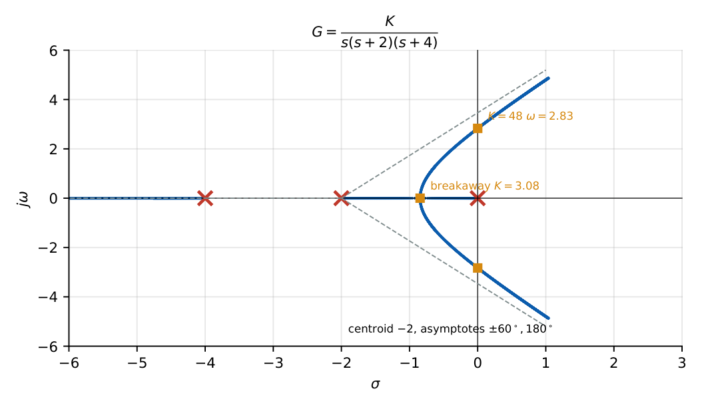
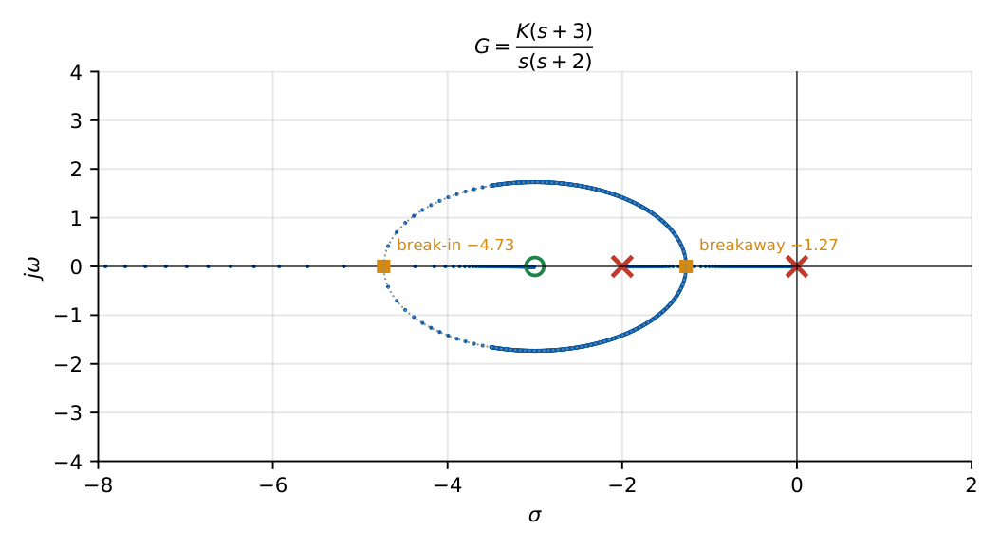
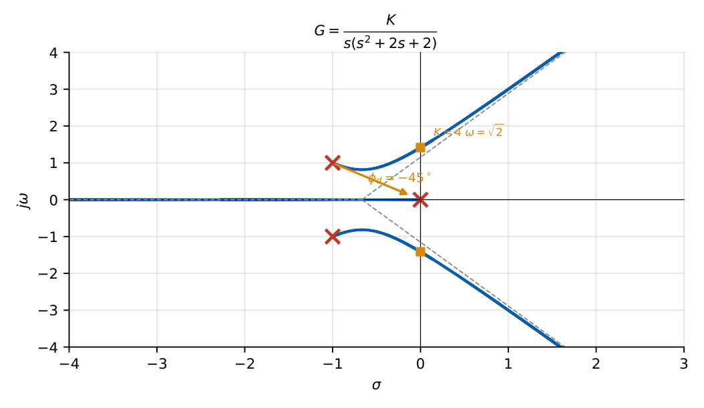

Root-Locus Analysis
In this chapter
Number of asymptotes, angles and centroid; breakaway points; real-axis segments; \(j\omega\)-axis crossing and the critical gain; angle of departure; gain at a given point. Expect one 2-mark question on root-locus construction every year.
15.1 Core concept
The root locus is the path of the closed-loop poles in the \(s\)-plane as a gain \(K\) varies from \(0\) to \(\infty\). With \(1+KG(s)H(s)=0\) and \(G(s)H(s)=\dfrac{\prod(s+z_i)}{\prod(s+p_k)}\) (\(m\) zeros, \(n\) poles):
Angle condition: \(\angle G(s)H(s)=\pm180^\circ(2q+1)\), \(q=0,1,\dots\) (locates the locus).
Magnitude condition: \(K=\dfrac{1}{|G(s)H(s)|}=\dfrac{\prod|s+p_k|}{\prod|s+z_i|}\) (gives \(K\) at any point on the locus).
Being on the locus means the angle condition holds; the magnitude condition then gives the gain there.
15.2 Construction rules
- Branches and symmetry. The number of branches is \(n\) (for \(n\ge m\)). The locus is symmetric about the real axis.
- Start and end. Branches start (\(K=0\)) at the \(n\) open-loop poles and end (\(K\to\infty\)) at the \(m\) open-loop zeros; \(n-m\) branches go to infinity along asymptotes.
- Real-axis segments. A point on the real axis lies on the locus if the number of real poles + zeros to its right is odd.
- Asymptotes. \(n-m\) asymptotes with angles \(\theta_q=\dfrac{180^\circ(2q+1)}{n-m}\) and centroid \[ \sigma_A=\dfrac{\sum\text{poles}-\sum\text{zeros}}{n-m}. \]
- Breakaway / break-in points. On the real axis where \(\dfrac{dK}{ds}=0\) with \(K=-\dfrac1{G(s)H(s)}\). Breakaway lies between two poles (or a pole and \(-\infty\)) on the locus; break-in between two zeros. Only roots lying on a locus segment are valid.
- Imaginary-axis crossing. Routh’s row of zeros (auxiliary polynomial), or substitute \(s=j\omega\) into \(1+KGH=0\) and equate real and imaginary parts.
- Angle of departure from a complex pole \(p\): \(\phi_d=180^\circ-\sum\angle(\text{other poles to }p)+\sum\angle(\text{zeros to }p)\). Angle of arrival at a complex zero: \(\phi_a=180^\circ+\sum\angle(\text{poles to }z)-\sum\angle(\text{other zeros to }z)\).
- Sum of poles. If \(n-m\ge2\) the sum of closed-loop poles \(=\) sum of open-loop poles (independent of \(K\)): as some branches move left, others move right.
15.3 Solved examples

\(G=\dfrac{K}{s(s+2)(s+4)}\), \(n=3\), \(m=0\). Segments: \((-2,0)\) and \((-\infty,-4)\). Asymptotes: \(60^\circ,180^\circ,300^\circ\), centroid \(\dfrac{0-2-4}{3}=-2\). Breakaway: \(K=-(s^3+6s^2+8s)\), \(\dfrac{dK}{ds}=-(3s^2+12s+8)=0\Rightarrow s=-2\pm1.155=-0.845,-3.155\); only \(-0.845\) lies on the locus, with \(K=3.08\). Crossing: \(s^3+6s^2+8s+K\): \(K=48\), \(s=\pm j\sqrt8=\pm j2.83\). Stable for \(0<K<48\).
On the same locus for \(\zeta=0.5\): let poles be \(-a\pm ja\sqrt3\) and \(-r\). Matching \(s^3+6s^2+8s+K=(s+r)(s^2+2as+4a^2)\): \(2a+r=6\), \(4a^2+2ar=8\Rightarrow a=\dfrac23\), \(r=\dfrac{14}{3}\), and \(K=4a^2r=8.30\). Dominant poles at \(-0.667\pm j1.155\).

\(G=\dfrac{K(s+3)}{s(s+2)}\): \(K=-\dfrac{s^2+2s}{s+3}\); \(\dfrac{dK}{ds}=0\Rightarrow s^2+6s+6=0\Rightarrow s=-3\pm\sqrt3=-1.27,-4.73\). Both lie on the locus (segments \([-2,0]\) and \((-\infty,-3]\)): breakaway \(-1.27\), break-in \(-4.73\). The complex branches form the circle \(|s+3|=\sqrt3\).

Poles \(0,-1\pm j\). At \(p=-1+j\): angle from the pole at \(0\) is \(135^\circ\), from \(-1-j\) is \(90^\circ\). \(\phi_d=180^\circ-(135^\circ+90^\circ)=-45^\circ\). Crossing: \(s^3+2s^2+2s+K\): \(2\cdot2>K\Rightarrow K_{max}=4\), \(2s^2+4=0\Rightarrow s=\pm j\sqrt2\).
\(G=\dfrac{K(s+1)}{s^2(s+3)(s+5)}\): \(n=4\), \(m=1\): \(3\) asymptotes at \(60^\circ,180^\circ,300^\circ\), centroid \(=\dfrac{(0+0-3-5)-(-1)}{3}=-\dfrac73\).
15.4 Effect of adding poles and zeros
Adding a pole pushes the locus to the right (destabilising; asymptote angles change); adding a zero pulls it to the left (stabilising, more damping). A zero near the origin cancelling a pole is the idea behind lead compensation.
15.5 Physical interpretation
Each point on the locus corresponds to one value of gain; the closed-loop poles’ real parts give speed (settling time) and radial position gives \(\zeta\). Rays from the origin are constant-\(\zeta\) lines; the point at which the locus meets the desired ray fixes \(K\).
(i) For two poles only, the locus on a two-pole segment is a vertical line through the midpoint. (ii) Check the real-axis rule by counting from the right: “odd” means the point is on the locus. (iii) The critical gain is the value making the \(s^1\) row (cubic) zero, and the imaginary crossing comes from the \(s^2\) row. (iv) \(\sum\) of closed-loop roots is fixed when \(n-m\ge2\).
(i) Breakaway solutions must lie on the locus; discard roots off the segment. (ii) Use positive-\(K\) conventions; for negative gain (complementary locus) the rule is “even”. (iii) Centroid uses \(\sum\)poles\(-\sum\)zeros, not the reverse. (iv) The locus starts at poles (not zeros) at \(K=0\). (v) Departure angle: subtract poles, add zeros, then add \(180^\circ\).
Q1. For \(G=\dfrac{K}{s(s+1)(s+2)}\) the number of asymptotes is (A) 1 (B) 2 (C) 3 (D) 0.
Q2. A point on the real axis has \(3\) real poles/zeros to its right: is it on the locus? (A) yes (B) no (C) depends on \(K\) (D) only if \(K<1\).
Q3. Root-locus branches start at (A) zeros (B) poles (C) origin (D) infinity.
Answers: Q1 (C). Q2 (A): odd. Q3 (B).
Q4. \(G=\dfrac{K}{s(s+4)}\): the breakaway point is (A) \(-1\) (B) \(-2\) (C) \(-4\) (D) \(-3\).
Q5. Angle of departure at \(-2+j4\) for \(G=\dfrac{K}{s(s+4)(s^2+4s+20)}\) is (A) \(-90^\circ\) (B) \(90^\circ\) (C) \(-45^\circ\) (D) \(0^\circ\).
Answers: Q4 (B): midpoint. Q5 (A): angles: \(116.6^\circ\) (from \(0\)), \(63.4^\circ\) (from \(-4\)), \(90^\circ\) (from \(-2-j4\)): \(180-270=-90\).
Q6. \(G=\dfrac{K}{s(s+1)(s+3)}\): centroid \(=\) (two decimals).
Q7. \(G=\dfrac{K}{s(s+2)(s+4)}\): maximum \(K\) for stability \(=\) .
Answers: Q6: \(-\dfrac{4}{3}=-1.33\). Q7: \(48\).
Q8. Which are correct? (A) Locus symmetric about the real axis (B) Branches end at zeros or infinity (C) Breakaway points may be complex (D) A zero to the left of poles bends the locus leftward.
Answers: Q8: (A), (B), (D). Breakaway points are on the real axis.
Open-loop \(G=\dfrac{K(s+2)}{s(s+1)}\) (zero at \(-2\), poles \(0,-1\)): real-axis segments \([-1,0]\) and \((-\infty,-2]\); breakaway/break-in from \(s^2+4s+2=0\Rightarrow s=-2\pm\sqrt2=-0.586,-3.414\); the complex locus is a circle of radius \(\sqrt2\) about \(-2\). All closed-loop poles are stable for every \(K>0\).
T1. List the rules for the number of asymptotes, angles and centroid.
T2. For \(G=\dfrac{K}{(s+1)(s+3)}\) find the breakaway point and comment.
Answers: T1: \(n-m\); \(\dfrac{180(2q+1)}{n-m}\); \(\dfrac{\sum p-\sum z}{n-m}\). T2: \(s=-2\); the locus goes vertically (\(\pm90^\circ\)) after breakaway; stable for all \(K\).
- Real axis: odd number of poles+zeros to the right. Asymptotes: \(n-m\), angles \(180(2q+1)/(n-m)\), centroid \((\sum p-\sum z)/(n-m)\).
- Breakaway: \(dK/ds=0\) (valid only on the locus). Crossing: Routh/\(j\omega\).
- \(\phi_d=180-\sum\angle_p+\sum\angle_z\). Gain: \(K=\prod|s+p|/\prod|s+z|\).
- Zeros pull left (stabilise), poles push right.